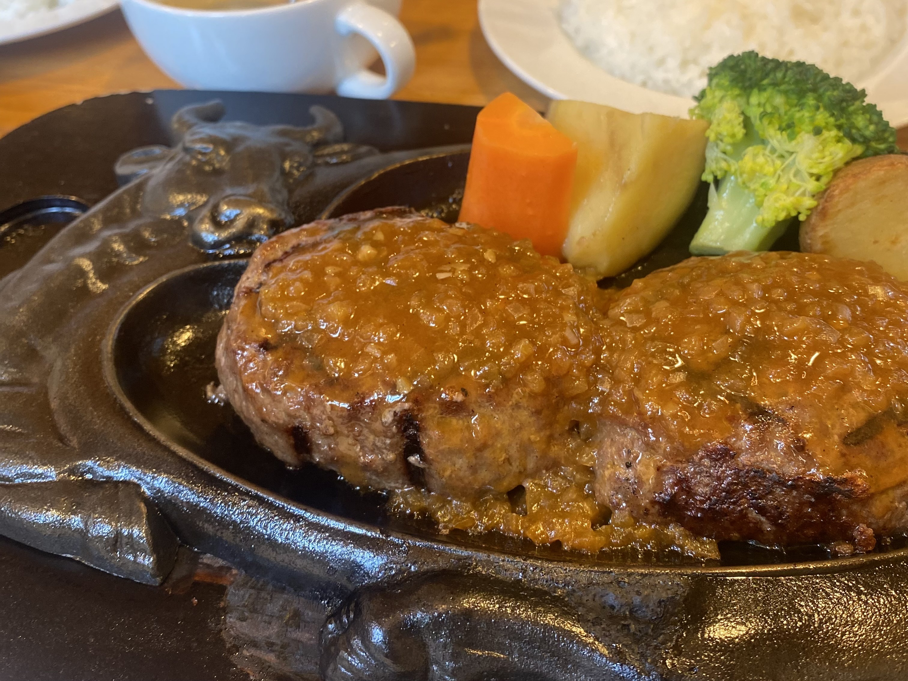

伊藤侑希です！ 現在、青山学院大学の理工学部で機械系を専攻しており、専攻分野の他にITに興味があるため、プログラミングについて勉強をしています。学業のかたわら、趣味として美味しいものを食べることと運動が好きで、話題の食べ物を楽しんだり、運動面では、スノーボードやバドミントンのサークル活動を楽しんでいます。
このサイトは、HTML、CSSの知識と技術を身に着けるために作製した、私の紹介サイトです。
- スノーボード
- 大学1年生の冬から友人の影響でスノーボードを始め、１シーズンに８回ほどスノーボードをしに行っています。次第に上達し、グラトリもできるようになってきたので、より上達するために今後も行きたいと思っています！

- 美味しいもの巡り
- SNSで話題になっている食べ物やスイーツを食べに行ったり、そのお店特有のメニューを食べるのが私にとっての楽しみです！
- 最近食べた中で一番美味しかったものは、右の大きな写真に写っている「パンとエスプレッソと花束を」というお店のフレンチトーストで、とてもしっとりでおいしかったので是非食べてみてほしいです！
- サークル活動
- 青山学院大学で１年生時からバドミントンサークルに在籍しており、バドミントンをしたり、合宿やBBQなどのイベントをしています！
青山学院大学理工学部に入学し、機械系、情報系について知識を深めるために日々学習しております！ 機械系に関しては技術士の資格を取るために機械の４力学について学習中で、情報系に関しては、講義以外でもWebサイトを用いて学習しております。
経験のあるプログラミング言語は以下の通りです。
C、C++、Physon、HTML、CSS
ITに関する知識や技術を学ぶため、ProgateなどのWebサイト上の教材を用いて、日々プログラミングについて学習しています。今後はJavaScriptを学び、多様な動きのあるWebサイトを製作したり、他にも、アプリ製作をしていこうと思っています！